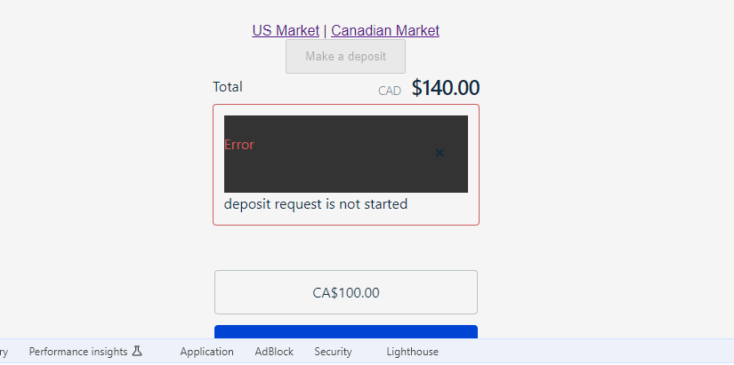
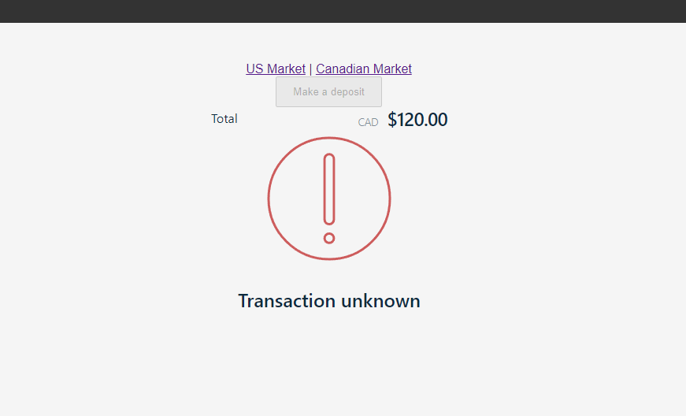
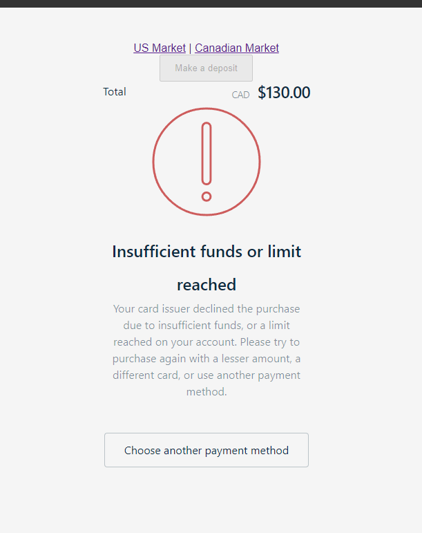

Phronesis project debrief #12
- What made you smile?
- What did you find confusing? Did you encounter any issues?
-
- https://www.rebilly.com/docs/dev-docs/deposits, link to strategies - https://www.rebilly.com/docs/settings/deposit-strategies, but now it goes to API reference.
- Would be cool to enable/disable deposit strategies.
- Suggestion to use any currency last transaction with currency conversion.
- No back buttons
- Browser back button leads to deposit not found error

- Not strict error if amount exceeds higher limit (should be "less or equal")
- Not strict error if amount is lower than limit (should be "greater or equal")
- "Transaction unknown" - unclear message, should be something like "processing".

-
Unexpected redirect to HPF if transaction is declined.

- In HPF when transaction is declined (again) - immediately redirects back to casino home page.